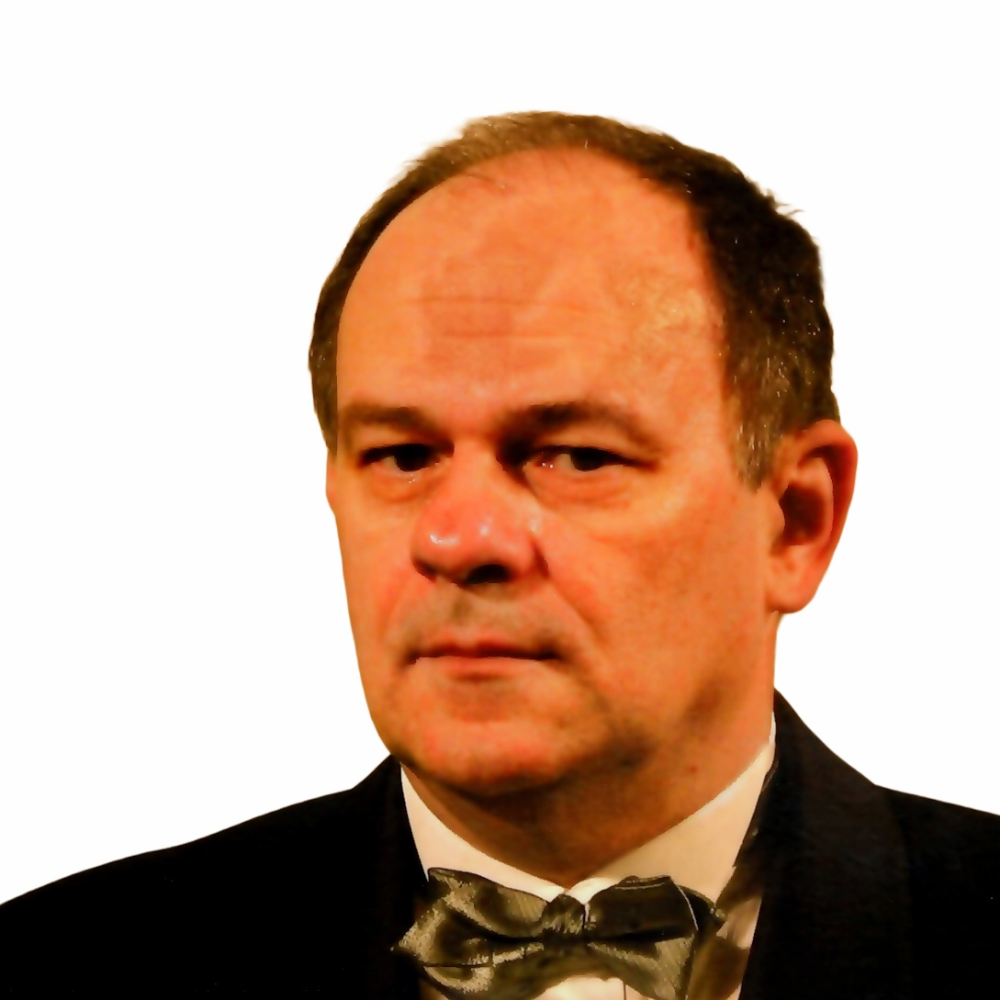

Wien · 2024Vater: Qualitätskontrolle für den Nikola-Tesla Fabrik in Zvezdara. Vier Geschwister. Nach dem Reaktorunfall strategische Umsiedlung nach Zentral-Beograd für Bildung und Sicherheit.
Mit 8 Jahren baute Bogo seinen ersten Röhrenempfänger. Während der Schulzeit am XI. Belgrader Gymnasium: ein eigener Fernsehreparaturdienst mit systematischem Kundenbuch — zur materiellen Unterstützung der Familie.
Universität Belgrad: Anorganische Technische Chemie. Parallel: Englische Philologie bei Professor Voja Vidović bis zur vollen Verhandlungssicherheit.
Chip-Level Reverse Engineering:Platinen für VTI (Vojnotehnički Institut) und die eigene Universität.
HP-41 Klub Wien: Vor Turkof entwickelte Bogo eine proprietäre Speichererweiterung für den HP-41C — form-fit-function, PCB in Beograd gefertigt bei VTI. Der Klub ernannte ihn zum Hardware-Verantwortlichen. Er kam nicht als Mitglied — er kam als jemand der etwas hatte was der Klub brauchte.
Deutsch: Kein Sprachkurs. Keine Bücher. Direkt auf der Straße — Kundengeräte annehmen, Telefon beantworten, Anrufe durchstellen. Wort für Wort.
XLeco / WebShopCity: Vor 25 Jahren: Single-Instance-Multitenancy für hunderte serbische Schulen und Botschaften weltweit. Security Outside the Document Root. No-Third-Party-Paradigma. Edge Computing. Privacy by Design. Alles das was heute Cloud-SaaS heißt — altruistisch, ohne Gewinn, erfolgreich beendet.
Wehrdienst: Panzerdivisionen. Wartung und Kalibrierung fahrzeuggebundener Funkanlagen in T-34 und T-72.